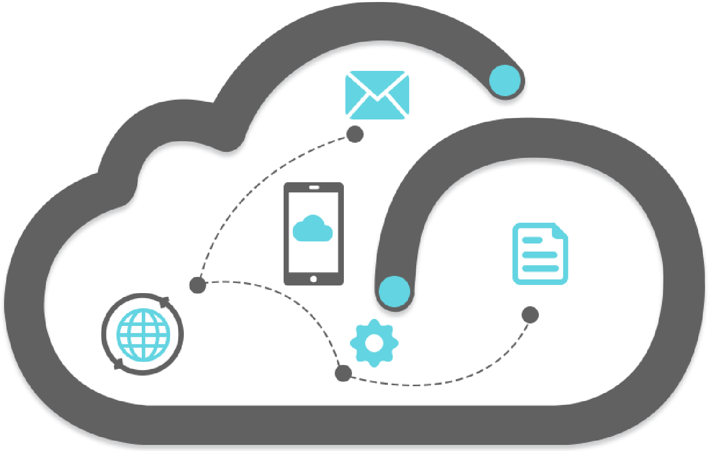

Hi, I am Akanksha and I am Software Developer

Work Experiences

Georgia State University
(Aug 2024 - Present)
Graduate Research Assistant
- Teaching Assistant for CIS3260 (Introduction to Programming) under the supervision of Prof. Yuan Long
- Conduct lab sessions for 55 undergraduate students on Python programming
- Grade student assignments based on established criteria
- Attend in-class sessions to provide guidance and support during hands-on activities
- Address student's questions and resolve any doubts related to coursework or programming concepts
Oracle India Pvt. Ltd.
(Sept 2021- Aug 2024)
Software Developer 2
- Developed components, component groups, scheduled maintenance, incident’s APIs (CRUD operations) in Flask (Python) for Oracle Cloud Infrastructure Status Service (OCI) V2 project by increasing efficiency by 20%
- Created soft delete and hard delete API to delete Status Page instances (Feature development)
- Handled database operations to modify database and create stored procedures using OracleDB for Status Page APIs
- Documented Status Page API Specifications (Open API Specifications) in Swagger and API testing using Postman
- Participated in Production, UAT Deployments, issue resolving using K8s pod logs, root cause analysis, On-Call rotation
- Upgraded 3rd and 4th parties using Pipdep Trees
ESDS Software Solution Pvt. Ltd
(Jun 2019 - Sept 2021)
Jr. Research Engineer
- Evaluated, modified and tested open source technologies (CouchDB, Redis, Docker Python SDK, AutoDiscovery of Networks) and exposed these services to integrate into eNlight 360 (cloud)
- Implemented wrappers/scripts in python for Container as a Service (CaaS), Netdisco (Autodiscovery of networks), CouchDB, Database as a Service using Flask Framework and deployed using Docker
- Created Research Proposals and documented in-depth information, analysis, methodology, solution architecture against research problem
Education

Masters (in progress)
(2024-2025)
Information Systems (Big Data Analytics)
Bachelors
(2015-2019)
B.E Computer Engineering
Graduated from Savitribai Phule Pune University with GPA 4 in Computer Engineering